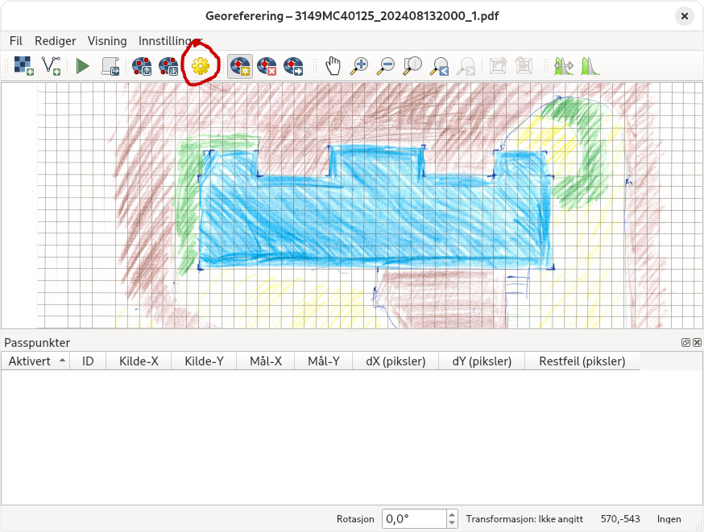

Georeferere en bildefil i QGIS#
Her er en steg for steg forklaring på hvordan man tar en bildefil og georeferer den i qgis, slik at den kan brukes sammen med annen geodata. Dere skal gi qgis de nøyaktige koordinatene til 4 punkt på kartet, som QGIS bruker matematikk på for å finne ut hvor kartet deres ligger.
Fremgangsmåte#
Åpne malfila og velg georeferering under lag-menyen

I georefering-vinduet trykker dere på åpne raster og velger kartet dere tegna

Nå skal dere ha fått opp kartet deres:
Nå må dere endre noen innstillinger, trykk på det gule tannhjulet for å få opp georef-innstillinger
De viktigste innstillingene:
Transformasjonstype: Projektiv - sier til qgis at kartet deres skal vris og vendes på for å passe virkeligheten
Mål-KRS: ETRS89 / UTM 32 - hvilket koordinatsystem som skal brukes. I sørnorge er UTM 32 vanligst
Resultatfil: ditt_filnavn.tif - Lagre fila på en plass dere husker. Lurt å lage et bra mappesystem
Resamplingsmetode - Hvor god kvalitet det blir på kartet. Kubisk 4x4 funker bra.
Bruk 0 for gjennomsiktighet: ☑️ Kartet får stygge svarte karter hvis dere glemmer å huke av denne
Trykk på OK når dere er ferdige. Nå kan dere starte med selve georefereringa.

Nå må dere velge dere ut fire punkter på kartet som skal få koordinater. De bør være veldefinerte og jevnt fordelt utover.
Trykk på ett og ett punkt i kartet og skriv inn koordinaten dere finner i f.eks norgeskart.no Pass på å velg UTM sone 32 og at norgeskart har nord først, mens QGIS har øst først.

Når dere har minst 4 punkter trykker dere på den grønne «play» knappen

Nå skal kartet deres ha dukket opp i QGIS! Pass på at laget ligger øverst lagmenyen